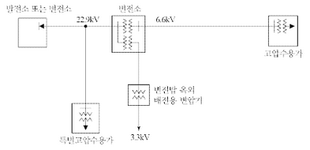
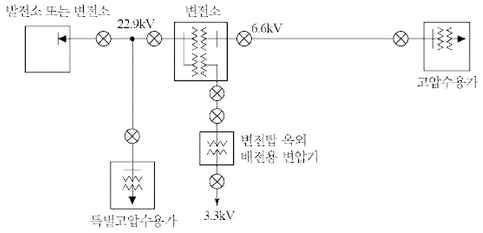
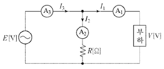
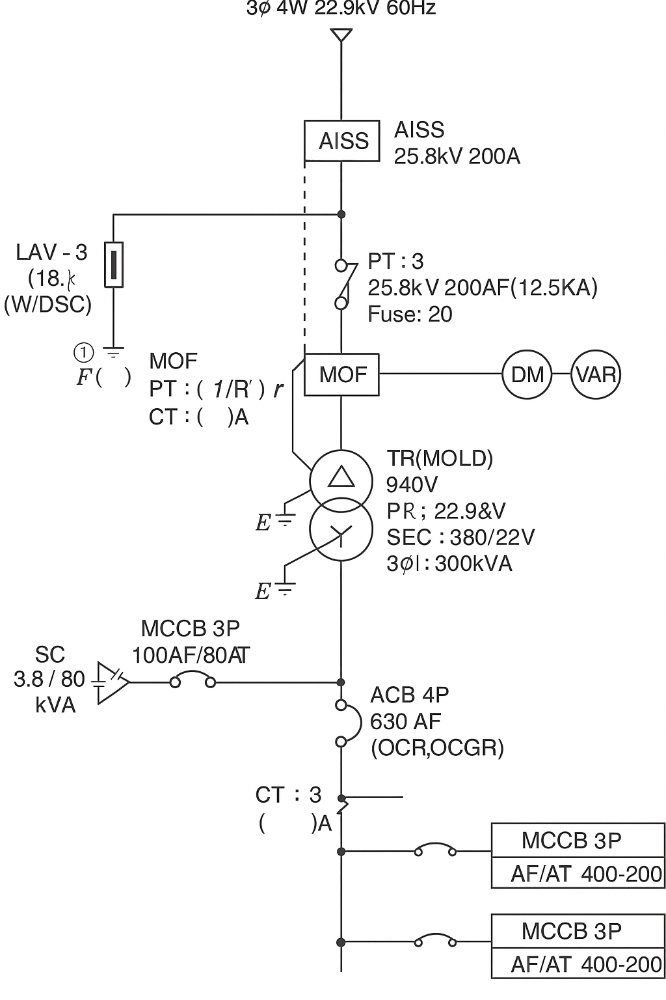
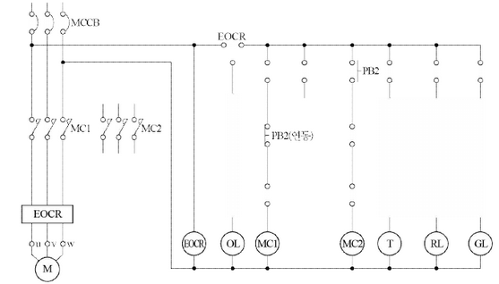
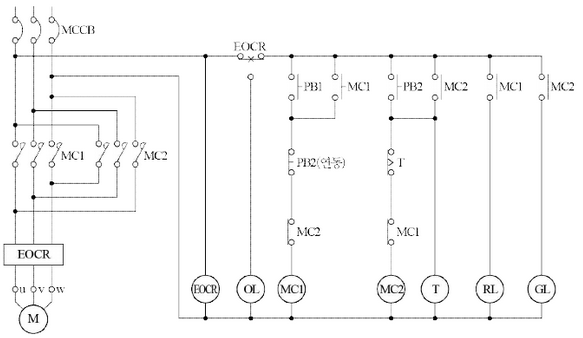
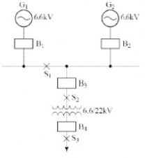
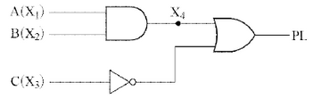

해설) 서술 암기형+단답 암기형 / 난이도 中
단상 유도 전동기는 회전자계가 생기지 않아 자기기동을 하지 못한다. 이에 따라 보조권선의 수단에 의해 회전자계를 발생시켜 기동시키기 위해 기동기를 사용한다.
부분점수
| 점수 | 세부기준 |
|---|---|
| 5점 | (1), (2)번이 모두 맞은 경우 5점 획득 |
| 2점 | (1)번만 맞은 경우 2점 획득 |
| 3점 | (2)번은 4문항이 모두 맞은 경우 3점, 2~3문항이 맞은 경우 2점, 1문항만 맞은 경우 1점 획득 |
해설
단상 유도 전동기는 반발기동형, 반발유도형, 콘덴서기동형, 콘덴서전동기, 분상기동형, 세이딩코일형, 모노사이클릭형 등이 있다.
감리원은 시공된 공사가 품질확보 미흡 또는 중대한 위해를 발생시킬 우려가 있다고 판단되거나, 안전상 중대한 위험이 발견된 경우에는 공사 중지를 지시할 수 있으며 공사중지는 부분중지와 전면정지로 구분한다. 부분중지의 경우는 다음 각 호와 같다.
정답
부분점수
| 점수 | 세부기준 |
|---|---|
| 4점 | 5문항이 모두 정답인 경우 4점 획득 |
| 3점 | 3~4문항이 정답인 경우 3점 획득 |
| 2점 | 1~2문항이 정답인 경우 2점 획득 |
해설
[감리원의 공사 중지명령의 구분]
부분중지
전면중지
[조건]
해설) 단순 계산형 / 난이도 下
\[ 발전기 용량 [kVA] ≥ (\frac{1}{0.2} - 1) \times 0.26 \times 1800 = 1872 [kVA] \]
1,872 [kVA]
| 점수 | 세부기준 |
|---|---|
| 4점 | 계산과정과 정답에 오류가 없는 경우 4점 획득 |
| 0점 | 계산과정이나 정답에 오류가 있는 경우 0점 |
$ P = [kVA] $
$ W_i$: 부하 입력 총계
\[ P [kVA] > (\frac{1}{\text{허용 전압 강하}} - 1) \times X_d \times \text{기동} [kVA] \]
\(X_d\): 발전기의 과도 리액턴스 (보통 25~30%)
허용 전압강하는 보통 20~30[%]이고, 문제에서 조건으로 주어지는 경우가 많다.
\[ \eta = \frac{M(T_2 - T_1)}{860Pt} \times 100 = \frac{4(90 - 15)}{860 \times 1 \times \frac{30}{60}} \times 100 = 69.767 \approx 69.77 [%] \]
정답 69.77 [%]
부분점수
| 점수 | 세부기준 |
|---|---|
| 4점 | 계산과정과 정답이 모두 맞는 경우 |
| 0점 | 정답이 틀리거나 계산과정에 오류가 있는 경우 |
접근 POINT
주어진 조건을 이용하여 어떠한 수식을 적용할지를 먼저 파악한 후에 공식을 적용한다. 공식을 적용할 때 각 요소의 단위에 주의해야 한다.
공식 CHECK
\[ M(T_2 - T_1) = 860Pt\eta \]
해설
다음은 전열기를 이용한 물을 데워 온도를 상승시키는데 필요한 에너지를 구하는 수식이다.
\[ M(T_2 - T_1) = 860Pt\eta \]
이를 변형하여 구하고자 하는 전열기의 효율을 구할 수 있다.
\[ \eta = \frac{M(T_2 - T_1)}{860Pt} \times 100 = \frac{4(90-15)}{860 \times 1 \times \frac{30}{60}} \times 100 = 69.767 \approx 69.77 [%] \]
여기서, 시간의 단위는 [h]를 사용한다는 것에 주의해야 한다.
해설) 단순 계산형+서술 암기형 / 난이도 하
\[ V = 154,000 \times 0.72 = 110,880 [V] \]
정답 110,880 [V]
절연내력 시험할 부분에 최대 사용전압에 의하여 결정되는 시험전압을 계속하여 10분간 가하여 견디어야 한다.
부분점수
| 점수 | 세부기준 |
|---|---|
| 5점 | (1), (2)번이 모두 맞은 경우 5점 획득 |
| 3점 | (1)번만 맞은 경우 3점 획득 |
| 2점 | (2)번만 맞은 경우 2점 획득 |
해설
[전로의 절연저항 및 절연내력(KEC 132)]
| 전로의 종류 | 접지방식 | 시험전압 (최대사용 전압의 배수) | 최저 시험전압 |
|---|---|---|---|
| 1. 7[kV] 이하인 전로 | 1.5배 | ||
| 2. 7[kV] 초과 25[kV] 이하 | 다중접지 | 0.92배 | |
| 3. 7[kV] 초과 60[kV] 이하 (2란의 것을 제외) |
1.25배 | 10.5 [kV] | |
| 4. 60[kV] 초과(전위 변성기를 사용하여 접지하는 것을 포함) | 비접지 | 1.25배 | |
| 5. 60[kV] 초과 (전위 변성기를 사용하여 접지하는 것 및 6란과 7란의 것을 제외) | 접지식 | 1.1배 | 75[kV] |
| 6. 60[kV] 초과 (7란의 것을 제외) | 직접접지 | 0.72배 | |
| 7. 170[kV] 초과 (발전소 또는 변전소 혹은 이에 준하는 장소에 시설하는 것) | 직접접지 | 0.64배 |

위의 그림에 피뢰기 시설을 의무적으로 설치해야 하는 장소에 직접 표시를 하시오.
피뢰기 설치장소를 4개소 쓰시오.
정답 ① ② ③ ④
해설) 단답 암기형+서술 암기형 / 난이도 中

부분점수
| 점수 | 세부기준 |
|---|---|
| 7점 | (1), (2)번이 모두 맞은 경우 7점 획득 |
| 3점 | (1)번만 맞은 경우 3점 획득 |
| 4~0점 | (2)번은 한 문항이 맞을 때마다 1점씩 획득 |

해설) 단순 계산형 / 난이도 중
\[ P = \frac{25}{2}(10^2 - 7^2 - 4^2) = 437.5 \text{[W]} \]
정답 437.5 [W]
\[ \cos\theta = \frac{10^2 - 7^2 - 4^2}{2 \times 7 \times 4} = 0.625 = 62.5\% \]
정답 62.5 [%]
부분점수
| 점수 | 세부기준 |
|---|---|
| 5점 | (1), (2)번이 모두 맞은 경우 5점 획득 |
| 3점 | (1)번만 맞은 경우 3점 획득 |
| 2점 | (2)번만 맞은 경우 2점 획득 |
해설
전력을 구하는 공식은 다음과 같다.
\[ P = V A_1 \cos\theta = (A_2 R) A_1 \cos\theta \text{ [W]} \]
\[ P = R A_2 \times A_1 \times \frac{A_3^2 - A_1^2 - A_2^2}{2 A_1 A_2} = \frac{R}{2} (A_3^2 - A_1^2 - A_2^2) \text{ [W]} \]
\[ P = \frac{R}{2} (A_3^2 - A_1^2 - A_2^2) \text{ [W]} \]
① 적합여부:
② 이유:
해설) 단순 계산형+서술 암기형 / 난이도 下
계산과정 \[ R_E = \frac{1}{2}(86 + 80 - 156) = 5 [\Omega] \]
정답 5[Ω]
① 적합여부: 적합 ② 이유: 피뢰기 접지공사의 접지저항값은 10[Ω] 이하이어야 한다.
| 점수 | 세부기준 |
|---|---|
| 7점 | (1), (2)번이 모두 맞은 경우 7점 획득 |
| 3점 | (1)번만 맞은 경우 3점 획득 |
| 4점 | (2)번만 맞은 경우 4점 획득, (2)번은 단 한 문항당 부분점수 2점 획득 |
접지저항값을 계산하는 공식은 다음과 같이 유도할 수 있다.
\[ R*E + R_a = R*{Ea} ... ① \]
\[ R*a + R_b = R*{ab} ... ② \]
\[ R*b + R_E = R*{bE} ... ③ \]
위의 식을 (①+②+③) × \(\frac{1}{2}\) 로 계산하면 다음 식이 성립된다.
\[ R*E + R_a + R_b = \frac{1}{2}(R*{Ea} + R*{ab} + R*{bE}) ... ④ \]
④ - ② 를 한다.
\[ R*E = \frac{1}{2}(R*{Ea} + R*{bE} - R*{ab}) \]
(그림: 원본파일명)
| 변압기 표준 용량 [kVA] |
|---|
| 1 ,2, 3, 5, 7.5, 10, 15, 20, 30, 50, 100, 150, 200 |
해설) 단순 계산형 / 난이도 下
정답
\(T_r = \frac{200 + 300 + 800 + 1,200 + 2,500}{1.14 \times 0.9} \times 10^{-3} = 4.87 \text{ [kVA]}\)
정답 5 [kVA]
부분점수
| 점수 | 세부기준 |
|---|---|
| 5점 | 계산과정과 정답에 오류가 없는 경우 5점 획득 |
| 0점 | 계산과정이나 정답에 오류가 있는 경우 0점 |
해설
변압기 용량은 다음식으로 계산한다.
변압기 용량 \(= \frac{\text{부하 설비 용량} \times \text{수용률}}{\text{부등률} \times \text{역률}}\)
| 출력 [kW] | 200[V]용 | 380[V]용 |
|---|---|---|
| 0.2 | 1.8 | 0.95 |
| 0.4 | 3.2 | 1.68 |
| 0.75 | 4.8 | 2.53 |
| 1.5 | 8 | 4.21 |
| 2.2 | 11.1 | 5.84 |
| 3.7 | 17.4 | 9.16 |
| 5.5 | 26 | 13.68 |
| 7.5 | 34 | 17.89 |
| 11 | 48 | 25.26 |
| 15 | 65 | 34.21 |
| 18.5 | 79 | 41.58 |
| 22 | 93 | 48.95 |
| 30 | 124 | 65.26 |
| 37 | 152 | 80 |
| 45 | 190 | 100 |
| 55 | 230 | 121 |
| 75 | 310 | 163 |
| 90 | 360 | 189.5 |
| 110 | 440 | 231.6 |
| 132 | 500 | 263 |
[비고1] 사용하는 회로의 전압이 220[V]인 경우는 200[V]인 것의 0.9배로 한다.
[비고2] 고효율 전동기는 제작자에 따라 차이가 있으므로 제작자의 기술자료를 참조한다.
16[mm²]
100[A]
| 점수 | 세부기준 |
|---|---|
| 4~0점 | 한 문항이 맞을 때마다 2점씩 획득 |
자료를 해석해서 푸는 문제로 문제 자체는 복잡해 보이지만 문제에 있는 조건대로 표에서 해당 내용을 찾으면 쉽게 풀 수 있는 문제이다.
\[ 전동기 용량 = 1.5 + 3.7 × 2 + 15 = 23.9 [kW] \]
\[ [표1]을 이용하여 전동기 전류 I_M을 계산한다. \]
\[ I_M = 4.21 + 9.16 × 2 + 34.21 = 56.74[A] \]
[표2]를 이용하여 B1, PVC 절연전선 란이 교차되는 곳의 전선의 굵기 16[mm²]을 선정한다.
[표2]의 전동기 [kW] 수의 총계 30[kW] 이하 부분과 기동기 사용 15[kW] 부분이 교차되는 곳의 과전류 차단기 100[A]를 선정한다.
\[ Q = 100 \times \frac{\sqrt{1 - 0.85^2}}{0.85} = 61.974 \dots \approx 61.97 \text{[kVA]} \]
정답 61.97 [kVA]
| 점수 | 세부기준 |
|---|---|
| 4점 | 계산과정과 정답이 모두 맞은 경우 |
| 0점 | 정답이 틀리거나 계산과정에 오류가 있는 경우 |
개선 전 역률과 개선 후 역률을 이용하여 필요한 전력용 콘덴서의 용량을 구하기 위해서는 무효전력의 차이를 통해서 구할 수 있다. 무효전력은 개선 전보다 개선 후가 작아지므로 개선 전의 무효전력에서 개선 후의 무효전력을 뺀 값으로 정해진다. 추가로 역률이 1이라면 개선 전의 무효전력을 모두 없앤 것으로 주어진 문제에서는 개선 전의 무효전력을 구하는 문제와 같다.
무효전력은 개선 전보다 개선 후가 작아지므로 개선 전의 무효전력에서 개선 후의 무효전력을 뺀 값으로 정해진다.
주어진 문제에서는 개선 후 역률이 1이므로 $_2 = = = 0 $이 되어, 개선 전의 무효전력을 구하는 문제와 같아진다.
\[ Q_t = P \tan\theta_1 = P \frac{\sin\theta_1}{\cos\theta_1} = P \frac{\sqrt{1 - \cos^2\theta_1}}{\cos\theta_1} = 100 \times \frac{\sqrt{1 - 0.85^2}}{0.85} = 61.974 \dots \approx 61.97 \text{[kVA]} \]
[조건]
61 [A]
해설) 단순 계산형 / 난이도 下
\[ I_B = (15 \times 2) + 10 = 40 [A] \]
\[ I_B \le I_n \le I_Z 에서 40 \le I_n \le 61 \]
\[ I_n = 61 [A] \]
정답 61[A]
부분점수
| 점수 | 세부기준 |
|---|---|
| 5점 | 계산과정과 정답이 모두 맞은 경우 5점 획득 |
| 0점 | 계산과정이나 정답에 오류가 있는 경우 0점 |
해설
[도체와 과부하 보호장치 사이의 협조(KEC 212.4.1)]
과부하에 대해 케이블(전선)을 보호하는 장치의 동작특성은 다음의 조건을 충족해야 한다.
$ I_B I_n I_Z, I_Z I_z $
$ I_B$: 회로의 설계전류(선도체를 흐르는 설계전류 또는 함유율이 높은 영상분 고조파, 특히 제3고조파가 지속적으로 흐르는 경우 중성선에 흐르는 전류이다.)
$ I_Z$: 케이블의 허용전류
$ I_n$: 보호장치의 정격전류(사용현장에 적합하게 조정된 전류의 설정 값)
$ I_z$: 보호장치가 규약시간 이내에 유효하게 동작하는 것을 보장하는 전류 과부하 보호 설계 조건도
정답
인체감전보호용 누전차단기(전류동작형)
부분점수
| 점수 | 세부기준 |
|---|---|
| 3점 | 정답을 정확하게 작성한 경우 3점 획득 |
| 0점 | 정답을 정확하게 작성하지 않은 경우 0점 |
해설
[콘센트의 시설(KEC 234.5)]
욕조나 샤워시설이 있는 욕실 또는 화장실 등 인체가 물에 젖어있는 상태에서 전기를 사용하는 장소에 콘센트를 시설하는 경우에는 인체감전보호용 누전차단기(정격감도전류 15[mA] 이하, 동작시간 0.03[초] 이하의 전류동작형의 것에 한함) 또는 절연변압기(정격용량 3[kVA] 이하인 것에 한함)로 보호된 전로에 접속하거나, 인체감전보호용 누전차단기가 부착된 콘센트를 시설하여야 한다.

정답 ① 명칭: ② 기능:
정답 ① 피뢰기의 정격전압: ② 공칭방전전류: ③ DISC 기능:
정답 장점: ① ②
단점: ① ②
\[ PT비: \frac{22,900/\sqrt{3}}{190/\sqrt{3}} \]
\[ CT비: I_4 = \frac{300 \times 10^3}{\sqrt{3} \times 22.9 \times 10^3} = 7.56 [A] \]
\[ **[정답]** 변류비 10/5 \]
장점
단점
ACB의 명칭: 기중차단기
CT의 정격(변류비) 계산
\[ I_4 = \frac{300 \times 10^3}{\sqrt{3} \times 380} \times (1.25 \sim 1.5) = 569.75 \sim 683.70 [A] \]
\[ **[정답]** 600/5 \]
| 점수 | 세부 기준 |
|---|---|
| 16점 | (1)~(6)이 모두 맞은 경우 16점 획득 |
| 15점 | (1), (2), (3), (4), (6)번은 한 문항이 맞을 때마다 3점씩 획득 |
| 1점 | (5)번만 맞은 경우 1점 획득 |
[AISS]
[몰드변압기]


| 점수 | 세부기준 |
|---|---|
| 5점 | 결선도를 정확하게 그린 경우에만 5점 획득, 부분점수는 없음 |
[조건]
발전기 G₁: 용량 10,000[kVA], \(x_{G₁}\) = 10[%]
발전기 G₂: 용량 20,000[kVA], \(x_{G₂}\) = 14[%]
발전기 T: 용량 30,000[kVA], \(x_T\) = 12[%]
S₁, S₂, S₃는 단락사고 발생지점이며, 선로 측으로부터의 단락전류는 고려하지 않는다.

기준용량을 변압기의 용량인 30[MVA]로 정하고 환산한다.
\[ \%Z*{G_1} = \frac{30}{10} \times 10 = 30\% , \%Z*{G_2} = \frac{30}{20} \times 14 = 21\% \]
\[ P\_{S,B_1} = \frac{100}{30} \times 30 = 100 [MVA] \]
\[ P\_{S,B_2} = \frac{100}{21} \times 30 = 142.857 \dots \approx 142.86 [MVA] \]
정답 B₁ 차단기의 용량 = 100 [MVA], B₂ 차단기의 용량 = 142.86 [MVA]
S₂지점에서 발전기 측을 바라보면 발전기 G₁과 G₂가 병렬이다.
\[ \%Z\_{G,합성} = \frac{30 \times 21}{30 + 21} = 12.352 \dots \approx 12.35 \% \]
\[ P\_{S,B_3} = \frac{100}{12.35} \times 30 = 242.914 \dots \approx 242.91 [MVA] \]
정답 B₃ 차단기의 용량 = 123.20 [MVA]
| 점수 | 세부기준 |
|---|---|
| 7점 | (1), (2), (3)이 모두 맞은 경우 7점 획득 |
| 3점 | (1)번만 맞은 경우 3점 획득 |
| 4점 | (2), (3)번은 한 문항이 맞을 때마다 2점씩 획득 |
접근 POINT
차단기의 차단용량을 구하는 문제는 임피던스나 리액턴스가 비례값인 %Z(퍼센트 임피던스)나 %X(퍼센트 리액턴스)로 주어지며, 발전기나 변압기의 용량이 다르게 주어지므로 먼저 기준용량을 결정한 후 임피던스나 리액턴스를 기준용량에 맞게 환산한 후에 차단용량 계산을 하여야 한다. 일반적으로 기준용량은 변압기의 용량을 기준으로 선정한다.
공식 CHECK
\[ 비례값을 환산하는 수식: \%Z*{기준(환산)} = \frac{기준용량[MVA] \times \%Z*{자기}}{자기용량[MVA]} \]
\[ 차단용량 구하는 수식: P_S = \frac{100}{\%Z} P_n \]
\[ P_S (차단용량) = %Z(등가임피던스) \* P_n (기준용량) \]
\[ 단락비: K_S = \frac{P_S}{P_n} = \frac{I_S}{I_n} = \frac{100}{\%Z} \]
\[ 등가저항: 직렬연결 R_T = R_1 + R_2 , 병렬연결 R_T = \frac{R_1 R_2}{R_1 + R_2} \]
해설
발전소에서는 단락사고가 발생할 경우의 수에 대비하여 차단기를 설치하여야 한다. 각각의 위치에 적합한 차단기를 선정하기 위하여 차단용량을 계산하여 설계할 수 있는 능력을 묻는 문제이다.
이때, 발전기의 용량과 변압기의 용량이 다르며, 조건은 용량에 따른 비례값인 퍼센트 임피던스나 퍼센트 리액턴스가 주어지므로 가장 먼저 해야 할 것은 기준용량을 정하여 비례값을 환산하는 것이다. 일반적으로 변압기의 용량을 기준용량으로 잡아서 계산하게 된다.

※ KEC 개정으로 인해 삭제된 문제가 있어 이번 회차 총점수는 95점입니다.
정답
부분점수
| 점수 | 세부기준 |
|---|---|
| 5점 | 논리회로를 정확하게 작성한 경우 5점 획득, 부분점수는 없음 |